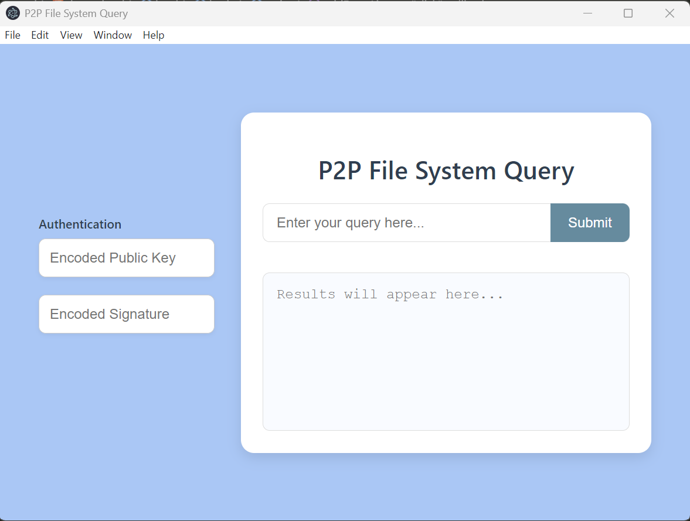
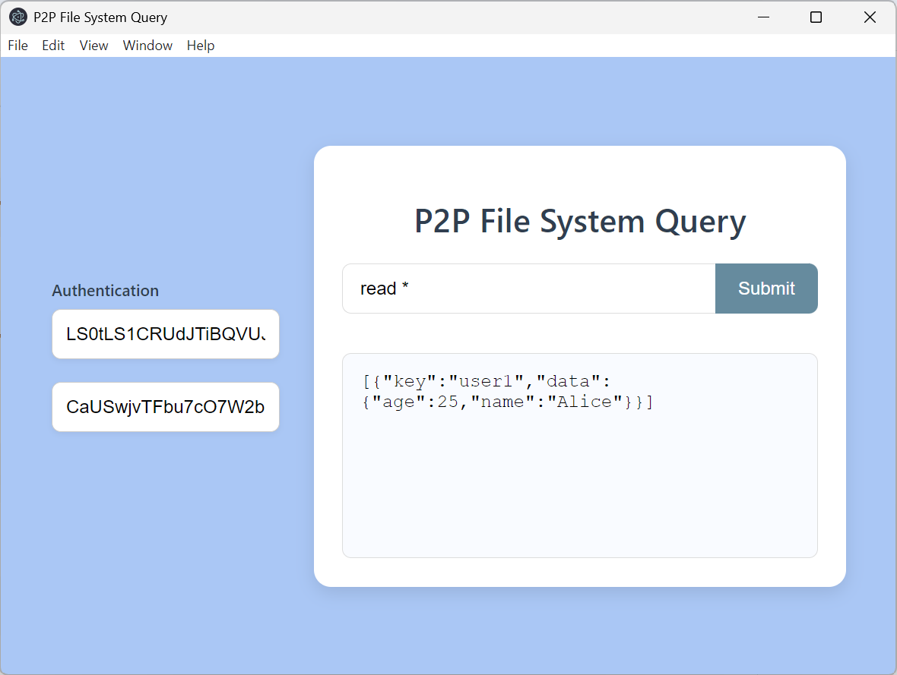
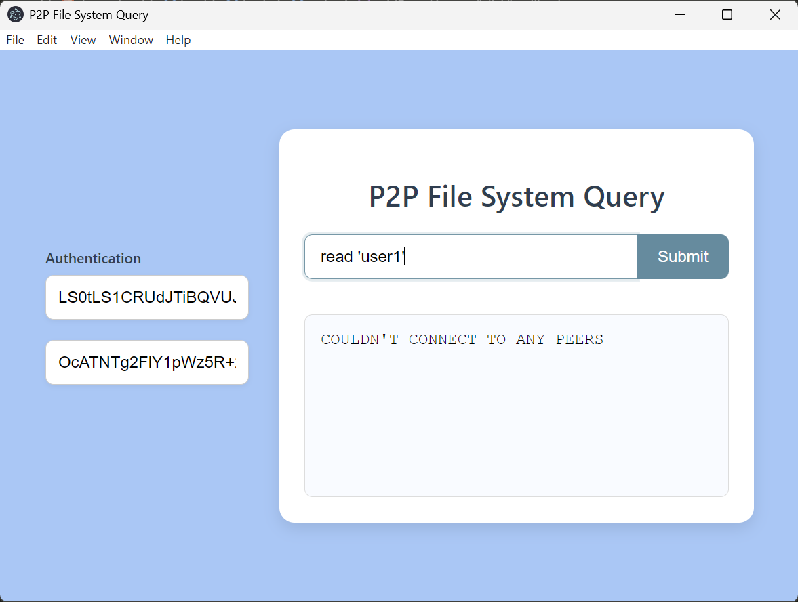
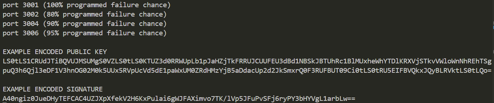

This was a group project with two of my friends at Eth Oxford 2025.
We took on the Decentralized Memory Organ bounty for the Torus Network. Our peer-to-peer distributed database is fault-tolerant, eliminating single points of failure by allowing client code to connect to any available node. Failed nodes are deprioritised, ensuring continuous operation, while horizontal scalability is easily achieved by adding more peers to the network. Our system features a decentralized peer-to-peer architecture, a custom query language supporting CRUD operations, a secure API for network access, a tamper-proof design through encryption, and an asymmetric encryption system for authentication working for both humans (through an Electron.js UI) and bots.
Below are some example images of the human interface.



Specifically, I built:
My teamates built the custom query language, the bash script that runs all of my servers and the encryption of data whithin the database. We planned the project at the start and worked on the initial Gun.js setup together.
User Features:
Technical Features:
For demonstrative purposes, a sample public key and signature are provided upon starting the human/bot interface. In reality, whether or not a public key is trusted would be externally managed by the Torus Network but in the backend, we trust all public keys by default. If you want to test untrusted humans/bots, simply comment out the indicated line in the middleware file.
